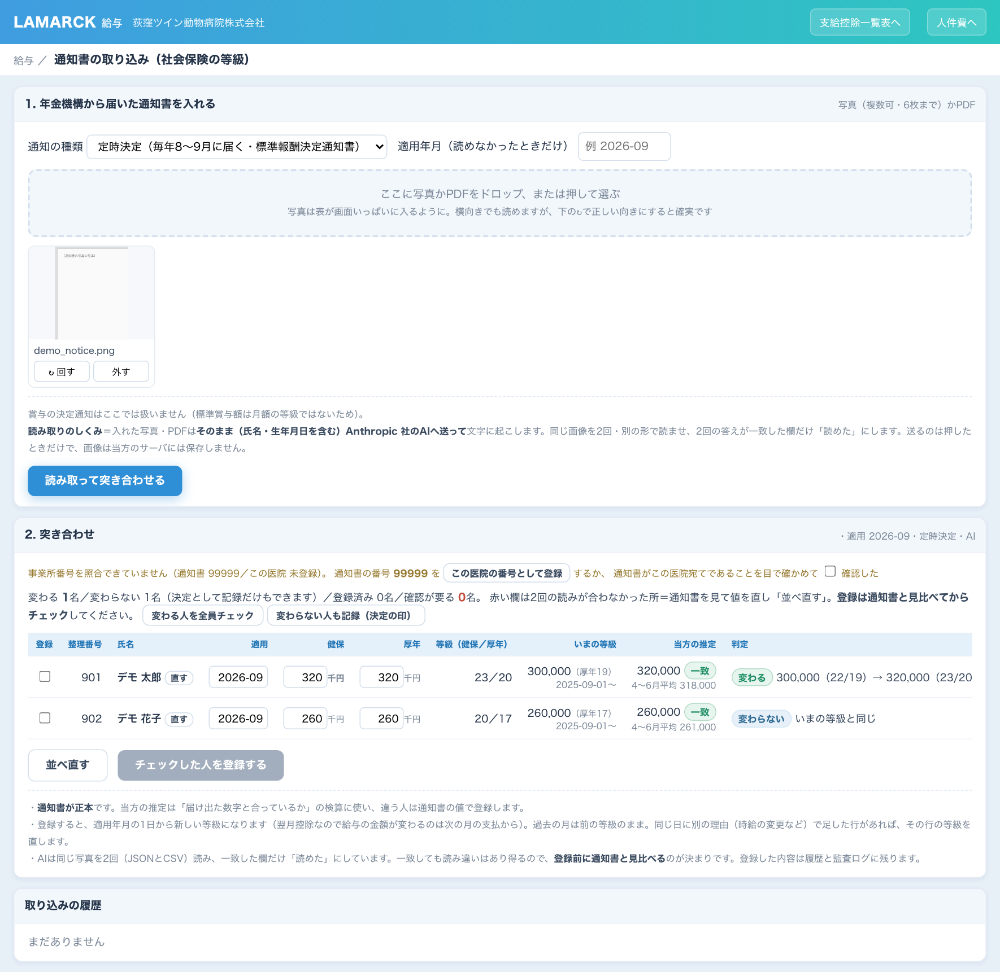

← 管理者用の入口へ戻る
← 管理者用の入口へ戻る
開き方
院内のパソコン、または Tailscale に繋がっている端末から開きます。外部からは開きません。
給与計算を開く開くとパスコードを聞かれます。これは勤怠アプリの管理パスコードとは別のものです。 勤怠の管理画面に入れる人（勤怠の担当者）は、給与の中身は開けません。
紙に印刷しないでください。給与明細・賃金台帳は画面で確認します（2026-08-21 院長）。
保存が必要なときはPDFにしてください。
画面は7つ
| 給与 | 月ごとの支給控除一覧。検索・印刷・Excel出力ができます。ここが普段見る画面です。右側の「締め方」に、締め日と支払日、固定給・時間外・社会保険料がそれぞれどの月の分かが出ます（2026年10月21日〜・設定の「会社と締め方」と同じ値）。支払日の表示もこの設定から出ます。 |
|---|---|
| 設定 | 従業員ごとの給与・手当・社会保険・扶養、会社の設定。新しい人の登録もここです。 |
| 人件費 | 職種ごと・1人あたり・月ごとの動き、時間外の割合、前月から動いた人。人件費率と目安（下で説明）。 |
| 賞与の検討 | 年2回の賞与を決めるための一覧。月数を入れて試せます（下で説明）。人件費の画面の右上から開きます。 |
| 通知書の取り込み | 年金機構から届いた「標準報酬決定通知書」の写真を読ませて、社会保険の等級を登録します（下で説明）。給与の画面の見出しから開きます。 |
| 給与の運用 | 給与の画面の見出し右の「給与の運用」から開きます（2026年10月24日〜）。締切と予定（振込の承認・確定の締切、終わっていないこと）、端数と振込の決まり（端数の丸め方・振込の承認の締切・締切の知らせの送り先・祝日表）、確定後に1人だけ直す（割増・勤務時間・勤怠控除の訂正と、振込先の口座・受取人カナの登録）、会計事務所の一覧と照合（会計事務所の支給控除一覧のCSVと1円単位で比べる）の4つです。合言葉が要ります。 |
| 導入の設定 | ラマルクとして他院に入れるときの初期設定です。締め日・支払日・どの月の分を払うかなど8つの質問に答える形で、確かめてから保存します。当院では普段使いません。 |
人件費の画面の見方
- 切り替え … 上のボタンで「給与／賞与」「役員を含める／役員を除く」を選びます。選んだ状態はその端末で覚えます。
- 人件費率 … 人件費（給与＋賞与・会社負担こみ）÷ 売上。事業年度（7月〜翌6月）の累計と半期で出します。 売上は電子カルテの経営画面と同じ数え方です。今月は売上が途中なので数えません（月が終わると入ります）。
- 目安と評価 … 30〜35%を目安に、役員を除いた率で判定します。 30%未満＝低い（優秀）／30〜35%＝幅の中（良好）／35%超＝高い（注意）。 役員を含めた率は参考として並べます。30%・35%の額との差額も出ます。
- 毎月の人件費の目安 … 役員と賞与を除いた毎月の人件費（基本給・手当＋会社負担）を、売上の21〜22%と比べる参考値です。 繁忙期・閑散期で売上が動くので、1か月だけで判断しません。
- 月ごと／半期／事業年度 … 「人件費の目安」の右上で切り替えます。前年・前々年とは同じ月どうしで比べます。
- 賞与をどこに入れるか … 支給月ではなく、その賞与が対象とする半期に入れます（7月の賞与＝1〜6月・12月の賞与＝7〜12月）。 対象の半期の6か月がそろってから率に入ります。
前年の給与明細が入るまでは、人件費率の前年比は「—」になります。売上の前年比はすぐ出ます。
毎月の流れ（25日払い）
Telegram にこちらから声をかけます。院長がすることは、返信2回だけです。
- 18日ごろ「締めのチェック」が届きます。勤怠に直すところがあれば勤怠の担当者へ連絡が行きます。
手入力が要る人（毎月額が変わる方）がいれば、テンプレートが届くので数字を入れて返信します。
【給与手入力 2026-09】 〇〇 〇〇 基本給 123456 - 20日ごろ「試算」が届きます（人数・総支給・差引・0円の人・要確認）。
よければ
【給与確定 2026-09】と返信します。 - 返信すると、明細の確定（スタッフのマイページに出ます）と振込ファイルの作成まで進みます。
- みずほビジネスWEBで取り込み → 承認。1回20件・500万円以内に分けたファイルが出ます。 締切は振込日の前営業日17:30です。当日の朝と昼にお知らせします。給与の画面の上に、近い締切と過ぎた締切が帯で出ます。
- 終わったら
【振込承認済み 2026-09】と返信します。給与の運用の画面の「この月の振込を承認した」を押しても同じです（給与か賞与かを選びます）。
昇給（毎年4月）
2か月前（2月ごろ）に「今年の昇給を決めましょう」とお知らせが届きます。終わるまで週1回くり返します。
- 決めた額を入れる …
node raise.js plan 2027-04-01 〇〇〇〇 000000（氏名と新しい額） - 今回は上げない人も残す …
node raise.js skip 2027-04-01 〇〇〇〇（「決めた」と「忘れた」を区別するため） - 給与へ反映 …
node raise.js apply 2027-04-01
昇給の3か月後に「社会保険の月額変更（随時改定）の確認」が自動で届きます。
2等級以上動く人がいると届出が要ります。2026年は4月昇給→7月から6名の等級が変わりました（人数だけ・氏名は画面で確認します）。
社会保険の等級（通知書の取り込み）
健康保険・厚生年金の等級は、年金機構から届く「標準報酬決定通知書」が正本です。 毎年8〜9月に届く定時決定（9月から適用・10月払いの給与から控除が変わる）と、昇給の3か月後に届く随時改定（月額変更）の2種類があります。 届いたら、この画面で写真を読ませて登録します。手で等級を打ち込む作業はありません。

見本は架空のデータです。
- 給与の画面の見出しにある「通知書の取り込み」を開き、通知の種類（定時決定／随時改定）を選びます。
- 通知書の写真（複数枚可・6枚まで）かPDFを入れて「読み取って突き合わせる」を押します。写真は表が画面いっぱいに入るように撮ります。
写真はそのまま（氏名・生年月日を含む）Anthropic 社のAIへ送って文字に起こします。同じ写真を2回・別の形で読ませ、2回の答えが一致した欄だけ「読めた」にします。 - 初回だけ「この医院の番号として登録」を押します（事業所番号を覚え、次からは別の医院宛ての通知書を弾きます）。 番号が読めなかったときは、通知書がこの医院宛てであることを目で確かめて「確認した」にチェックします。
- 表の「いまの等級」と「判定」を通知書と見比べます。赤い欄は2回の読みが合わなかった所なので、通知書を見て値を直し「並べ直す」を押します。 同姓同名がいるときは候補から選びます。
- 登録する人にチェックを入れて「チェックした人を登録する」を押します。「変わる人を全員チェック」で一度に付けられます。 等級が変わらない人も「決定として記録」しておくと、あとから遡って直すときに上書きされません。
登録すると、適用年月の1日から新しい等級になります。翌月控除なので、給与の金額が変わるのは次の月の支払からです。過去の月は前の等級のままです。
登録した内容は「取り込みの履歴」と監査ログに残ります。
通知書が正本です。画面の「当方の推定」は「届け出た数字と合っているか」の検算に使うもので、違う人は通知書の値で登録します。
年金機構の記録が従前のままの人（届け出が受理されていない等）は、通知書どおり従前の等級で登録してください（2026-10 の定時決定で2名）。
賞与の決定通知はこの画面では扱いません。
賞与（7月・12月）
支給日の45日前から順にお知らせが届きます（回を決める→誰にいくら→明細→確定→振込）。
- 回を作る …
node bonus.js plan 2026-12 2026-12-04 冬 - 対象者を見る …
node bonus.js check 2026-12（在籍・入社からの期間・算定期間の欠勤を出します） - 各人を決める …
node bonus.js set 2026-12 〇〇〇〇 2（基本給の2か月分）／… 円 〇〇〇〇〇〇（金額で） - 明細 …
node bonus.js build 2026-12 --save→ 確定node bonus.js confirm 2026-12
賞与の検討（決める前に）
人件費の画面の右上「賞与の検討へ」から開きます。上で賞与の回を選ぶと、対象の半期（上半期＝7〜12月／下半期＝1〜6月）の材料が1人1行で並びます。役員は並びません。
| 前回・前年の同じ回 | 何か月分・いくら払ったか。登録に月数が無い回は「賞与額÷その時の基本給」で出し、推定の印を付けます。 |
|---|---|
| 入社から・臨床 | 支給日時点の入社からの期間。臨床に出た年月は一度入れると保存され、「◯年目」が出ます。 |
| 半期の材料 | 獣医師＝会計明細の担当者ごとの売上／トリマー＝トリミング＋ペットホテルの売上÷勤務人数／動物看護師ほか＝全体の売上の増減。どれも前年の同じ月と比べます。 |
| 今回の月数 | 入れるとすぐ、金額・会社負担こみの額・この半期の人件費率（役員を除く・賞与こみ）・30%と35%に収まる賞与の上限が変わります。 |
「案を保存」で残した月数は案です。明細や振込には出ません。決めたら上の
node bonus.js set で入れます。
半期の途中で決めるときは、終わった月の平均×6で見込みます。
就業規則と実際の支給日がずれています。規則は「7月・12月の最初の金曜日」ですが、
2026年7月の実際の支給は7月10日（第2金曜）でした。賞与は「支給日に在籍している人に払う」決まりなので、
どちらかに揃えてください。
困ったとき
- 金額が違う気がする … 画面のExcel出力と、会計士の支給控除一覧表を並べて見ます。1円単位で合う作りです。
- スタッフから「明細が見えない」 … その月が確定済みか確認します。確定していない月は出ません。
- 通知書の読み取りが止まる・赤い欄が多い … 写真を撮り直します（表が画面いっぱい・正しい向き・影や反射なし）。90秒で終わらないときは通信を確かめてもう一度押します。読めない欄は通知書を見て手で直せます。
- 「事業所番号が違います」で登録できない … 別の医院宛ての通知書です。初回に登録したこの医院の番号と照合しています。
- 共有のパソコンで使い終わった … 画面の上の「ログアウト」を押します。その端末に覚えた合言葉が消え、開いている明細のタブも閉じます（2026年10月21日〜）。
- 設定で「確かめた後に内容が変わっています」と出た … 「変更を確かめる」を押した後に欄を書き換えると出ます。もう一度「変更を確かめる」から進めます（確かめた内容と違うものは保存しない作りです）。
- パスコードを忘れた … serverpc の設定に入っています。院長がクリップボードで確認してください。
- 確定した後に間違いが見つかった … 給与の運用の「確定した明細を1人だけ直す」で、①確定を取り消す→②入れる→③試算で差を見る→④保存→⑤確定の順に進めます。前の明細は履歴に残ります。まだ銀行で承認していない振込ファイルは「古い」になるので作り直します。
- 振込先の口座や受取人名が変わった … 給与の運用の「振込先の口座・受取人カナを登録／訂正する」で、従業員コード・いつから・理由を入れて登録します。氏名だけでは口座を結びません。
- 支給が0円の月に「住民税の扱いが未決定」で保存できない … 育休中で支給が無い月は、住民税を「本人から受け取る」か「普通徴収に切り替える」かを決めて入れます。決めるまで、その月の給与は保存できません。
- いま何をすればいいか分からない …
node pay_calendar.js --textで予定が出ます。